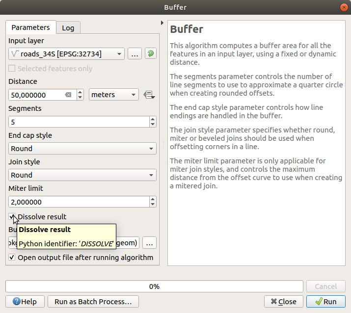
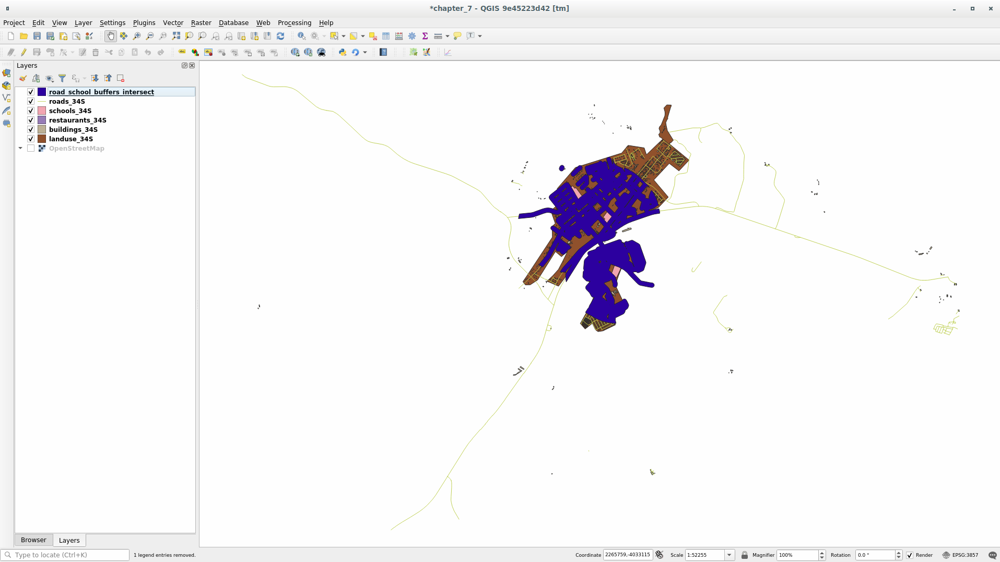
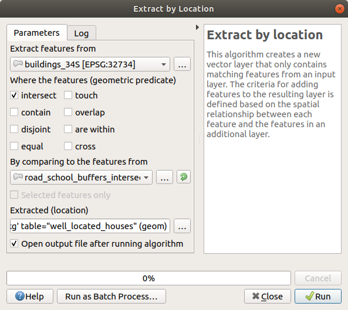
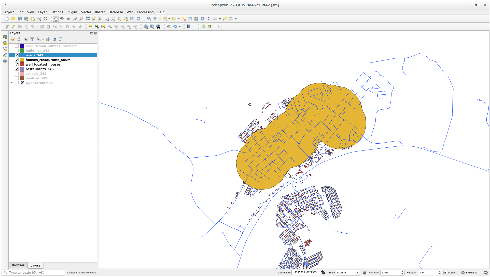
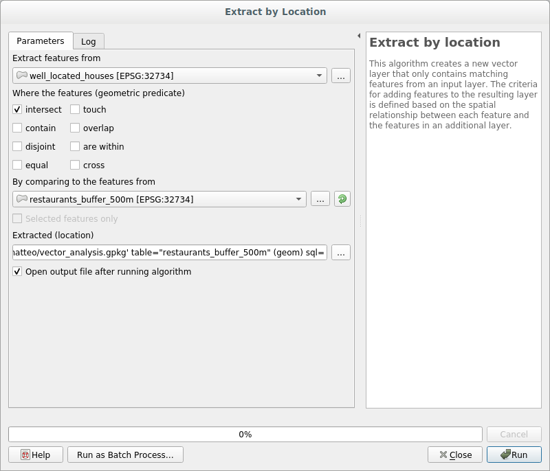

6.2. သင်ခန်းစာ - Vector ဆန်းစစ်လေ့လာခြင်း (Lesson: Vector Analysis)
အမျိုးမျိုးသော feature များသည် တစ်ခုနှင့်တစ်ခု မည်သို့ အပြန်အလှန်တုံ့ပြန်နေသည်ကို ဖော်ထုတ်ရန်အတွက် vector data များကို ဆန်းစစ်လေ့လာနိုင်ပါသည်။ Analysis နှင့်ဆက်စပ်သော function များစွာရှိပါသည်၊ ထို့ကြောင့် ထို function အားလုံးအကြောင်းမရှင်းပြတော့ပါ။ ထိုအစား မေးခွန်းတစ်ခုထုတ်ပြီး ထို မေးခွန်းကို QGIS တွင်ရှိသော tool များကိုအသုံးပြုပြီး ဖြေရှင်းသွားမည်ဖြစ်သည်။
ဤသင်ခန်းစာအတွက် ရည်မှန်းချက်- မေးခွန်းတစ်ခုထုတ်ပြီး ၎င်းမေးခွန်းကို analysis tool များအသုံးပြုပြီး ဖြေရှင်းရန်
6.2.1. ★☆☆ GIS လုပ်ငန်းစဉ် (The GIS Process)
မစတင်မီ ပြဿနာတစ်ခုကို ဖြေရှင်းရာတွင် အသုံးပြုနိုင်မည့် process ကို ခြုံငုံအနှစ်ချုပ် တစ်ခုပြုလုပ်ပါက ပိုအသုံးဝင်ပါမည်။ ထိုအတွက် နည်းလမ်းမှာ-
ပြဿနာကို ဖော်ထုတ်ခြင်း
Data များကို ရယူခြင်း
ပြဿနာကို ဆန်းစစ်လေ့လာခြင်း
ရလာဒ်များကို တင်ပြခြင်း
6.2.2. ★☆☆ ပြဿနာ (The Problem)
ဖြေရှင်းရမည့် ပြဿနာတစ်ခုကို ဆုံးဖြတ်ပြီး process ကိုစတင်ကြည့်ပါမည်။ ဥပမာ- သင့်အနေဖြင့် အိမ်ခြံမြေပွဲစားတစ်ယောက်ဖြစ်ပြီး သင့်ဖောက်သည်များအတွက် Swellendam တွင် အောက်ပါသတ်မှတ်ချက်များနှင့်ကိုက်ညီသော လူနေအိမ်တစ်ခုကို ရှာဖွေနေပါသည်-
Swellendam ထဲတွင် တည်ရှိရန်လိုအပ်ပါသည်။
ကျောင်းနှင့် သင့်တော်သည့် အကွာအဝေးအတွင်း ရှိရပါမည် (၁ ကီလိုမီတာ ဆိုပါစို့)။
အရွယ်အစားအားဖြင့် ၁၀၀ စတုရန်းမီတာ ထက်ပိုကြီးရပါမည်။
အဓိကကားလမ်းမနှင့် ၅၀ မီတာအောက် ပိုနီးရပါမည်။
စားသောက်ဆိုင်နှင့် ၅၀၀ မီတာအောက် ပိုနီးရပါမည်။
6.2.3. ★☆☆ Data
ထိုမေးခွန်းများကို ဖြေရှင်းရန် အောက်ပါ data များလိုအပ်ပါလိမ့်မည်-
ဧရိယာအတွင်းရှိ လူနေအိမ် (အဆောက်အဦများ)
မြို့ထဲနှင့် မြို့ပတ်လည်ရှိ လမ်းများ
ကျောင်းများနှင့် စားသောက်ဆိုင်များ၏ တည်နေရာများ
အဆောက်အဦများ၏ အရွယ်အစား
အဆိုပါ data များကို OSM မှတဆင့် ရယူနိုင်ပြီး ဤ manual တွင်အသုံးပြုနေဆဲ dataset များကိုလည်း ယခုသင်ခန်းစာအတွက် အသုံးပြုနိုင်ပါသည်။
အခြား ဧရိယာမှ data များကို download ရယူလိုလျှင် မည်သို့လုပ်ဆောင်ရမည်ကို Introduction Chapter ကိုဖတ်ရှုပါ
Note
OSM မှ download ရယူသည်များသည် data field များ တသမတ်တည်းရှိသော်လည်း လွှမ်းခြုံမှုနှင့် အသေးစိတ်ကျမှုများ ကွဲပြားပါသည်။ ဥပမာအားဖြင့် သင်ရွေးချယ်လိုက်သော နေရာဒေသတွင် စားသောက်ဆိုင်များနှင့်ပတ်သက်သော အချက်အလက်များမပါရှိလျှင် အခြား နေရာဒေသတစ်ခုကို ရွေးချယ်ရန်လိုအပ်မည်ဖြစ်သည်။
6.2.4. ★☆☆ လိုက်လုပ်ကြည့်ပါ- Project တစ်ခုစတင်ပြီး Data များကိုရယူပါ (Follow Along: Start a Project and get the Data)
အလုပ်လုပ်မည့် data များကို ဦးစွာ ထည့်သွင်းရန်လိုအပ်ပါသည်။
QGIS project အသစ်တစ်ခုကို စတင်ပါ
အလိုရှိလျှင် နောက်ခံမြေပုံတစ်ခုကို ထည့်သွင်းနိုင်ပါသည်။ Browser ကိုဖွင့်ပြီး XYZ Tiles menu မှ OSM နောက်ခံမြေပုံကို ထည့်သွင်းပါ။

training_data.gpkgGeopackage database ထဲတွင် ဤသင်ခန်းစာတွင် အသုံးပြုမည့် dataset အများစုကို တွေ့ရမည်ဖြစ်သည်-buildingsroadsrestaurantsschools
၎င်းတို့ကို ထည့်သွင်းပါ၊
landuse.sqliteကိုလည်း ထည့်သွင်းပါ။Swellendam ၊ South Africa ကိုမြင်ရမည့် layer extent သို့ zoom ချဲ့ပါ
လုပ်ဆောင်မှုမစတင်မီ သီးခြား လမ်းအမျိုးအစားအချို့ကိုသာ ရရှိရန် roads layer ကို filter (စစ်ထုတ်) လုပ်ပါမည်။
OSM dataset များထဲရှိ အချို့ လမ်းများသည်
unclassified၊tracks၊pathနှင့်footwayများအဖြစ် ရှိနေပါသည်။ ၎င်းတို့ကို dataset ထဲမှ ဖယ်ချန်ထားပြီး ဤလေ့ကျင့်ခန်းအတွက် ပိုမိုသင့်တော်သော အခြားလမ်းအမျိုးအစားများကို အသုံးပြုမည်ဖြစ်သည်။ထို့အပြင် OSM data များသည် နေရာတိုင်းအတွက် update ဖြစ်နေသည်မဟုတ်သောကြောင့်
NULLတန်ဖိုးများကိုလည်း ဖယ်ချန်ထားပါမည်။roadslayer ပေါ်တွင် right-click နှိပ်ပြီး Filter… ကိုရွေးချယ်ပါ။ပေါ်လာသော dialog ထဲတွင် အောက်ပါ expression ကိုအသုံးပြုပြီး အဆိုပါ feature များကို filter လုပ်ပါမည်-:
"highway" NOT IN ('footway', 'path', 'unclassified', 'track') AND "highway" IS NOT NULL
Operator ၂ ခုဖြစ်သော
NOTနှင့်INပေါင်းစပ်ခြင်းသည်highwayfield ထဲတွင် အဆိုပါ attribute တန်ဖိုးများပါရှိသော feature များအားလုံးကို ဖယ်ချန်ထားပေးမည်ဖြစ်သည်။ANDoperator နှင့်ပေါင်းစပ်အသုံးပြုသောIS NOT NULLသည်highwayfield ထဲတွင် တန်ဖိုးမပါရှိသော လမ်းများကို ဖယ်ချန်ထားပေးမည်ဖြစ်သည်။roads layer ၏ဘေးရှိ
 icon သည် အဆိုပါ layer တွင် filter လုပ်ထားသည်ကို ပြသပေးပါသည်၊ ထို့ကြောင့် project ထဲတွင် အချို့သော feature များအသုံးပြုနိုင်မည်မဟုတ်ပါ။
icon သည် အဆိုပါ layer တွင် filter လုပ်ထားသည်ကို ပြသပေးပါသည်၊ ထို့ကြောင့် project ထဲတွင် အချို့သော feature များအသုံးပြုနိုင်မည်မဟုတ်ပါ။
Data အားလုံးပါဝင်သော မြေပုံသည် အောက်ပါပုံစံအတိုင်း ဖြစ်နေသင့်ပါသည်-
6.2.5. ★☆☆ မိမိကိုယ်တိုင်ကြိုးစားကြည့်ပါ- Layer များ၏ CRS ကိုပြောင်းလဲပါ (Try Yourself: Convert Layers’ CRS)
Layer များအတွင်း အကွာအဝေးတိုင်းတာမှုများပြုလုပ်မည်ဖြစ်သောကြောင့် layer များ၏ CRS ကို ပြောင်းလဲရန်လိုအပ်ပါသည်။ ထိုသို့လုပ်ဆောင်ရန် layer တစ်ခုချင်းစီကို တစ်လှည့်စီ ရွေးချယ်ပြီး projection အသစ်ဖြင့် layer အသစ်သိမ်းဆည်းရန် လိုအပ်ပါသည်။ ထို့နောက် မြေပုံထဲသို့ projection ပြောင်းထားသော layer အသစ်များကို ထည့်သွင်းပါ။
ရွေးချယ်စရာအမျိုးမျိုးရှိပါသည်၊ ဥပမာ- layer တစ်ခုချင်းစီကို ESRI Shapefile format dataset တစ်ခုအနေဖြင့် export လုပ်နိုင်သည်၊ ရှိနေပြီးသား GeoPackage ဖိုင်ထဲတွင် layer များကို append (ဆက်တွဲပေါင်းထည့်) ပြုလုပ်နိုင်သည်၊ သို့မဟုတ် အခြား GeoPackage ဖိုင်ကို ဖန်တီးပြီး projection ပြောင်းထားသော layer များဖြင့်ဖြည့်သွင်းထားနိုင်သည်။ နောက်ဆုံး ရွေးချယ်စရာကို ပြသပေးပါမည်၊ ထို့ကြောင့် training_data.gpkg သည် ရှင်းလင်းနေပါလိမ့်မည်။ အကောင်းဆုံးဖြစ်မည့်အရာကို သင်ကိုယ်တိုင် ရွေးချယ်ကြည့်ပါ။
Note
ဤဥပမာတွင် WGS 84 / UTM zone 34S CRS ကိုအသုံးပြုနေသည်ဖြစ်သော်လည်း သင့်နေရာဒေသအတွက် ပိုမိုသင့်တော်သော UTM CRS တစ်ခုကို အသုံးပြုသင့်ပါသည်။
Layers panel ထဲရှိ roads layer ကို right-click နှိပ်ပါ
Export –> Save Features As… ကိုနှိပ်ပါ
Save Vector Layer As dialog ထဲတွင် Format အနေဖြင့် GeoPackage ကိုရွေးချယ်ပါ
File name အတွက် … ကိုနှိပ်ပြီး GeoPackage အသစ်ကို
vector_analysisဟု အမည်ပေးပါLayer name ကို
roads_34Sဟုပြောင်းပါCRS ကို WGS 84 / UTM zone 34S သို့ပြောင်းပါ
OK ကိုနှိပ်ပါ-

ထိုသို့လုပ်ခြင်းသည် GeoPackage database အသစ်ကိုဖန်တီးပေးမည်ဖြစ်ပြီး
roads_34Slayer ကို ထည့်သွင်းပေးမည်ဖြစ်သည်။Layer တစ်ခုချင်းစီအတွက် ထို process အတိုင်းထပ်ခါထပ်ခါလုပ်ဆောင်ပါ၊
vector_analysis.gpkgGeoPackage ထဲတွင် မူရင်းအမည်နောက်၌_34Sတွဲဆက်ထားသော layer အသစ်တစ်ခုစီကို ဖန်တီးပေးပါသည်။MacOS တွင် ပေါ်လာသော dialog ထဲရှိ Replace ခလုတ်ကိုနှိပ်ခြင်းသည် ရှိနေပြီးသား GeoPackage ကို အစားထိုးလုပ်ဆောင်ပေး (overwrite) စေပါသည်။
Note
ရှိနေပြီးသား GeoPackage တစ်ခုထဲသို့ layer တစ်ခုကိုသိမ်းဆည်းသောအခါ GeoPackage ထဲတွင် အမည်တူ layer ရှိမနေလျှင် QGIS သည် ရှိနေပြီးသား layer များနောက်တွင် သိမ်းဆည်းမည့် layer ကို ထည့်သွင်း ပေးပါလိမ့်မည်။
Project မှ layer အဟောင်းများတစ်ခုချင်းစီကို ဖယ်ရှားပါ
Layer များအားလုံးအတွက် process လုပ်ဆောင်ပြီးပါက layer တစ်ခုခုပေါ်တွင် right-click နှိပ်ပြီး Zoom to layer extent ကိုနှိပ်ပါ။
ယခုဆိုလျှင် OSM data များကို UTM projection တစ်ခုသို့ ပြောင်းလဲပြီးဖြစ်ပါသည်၊ ထို့ကြောင့် တွက်ချက်မှုများကို စတင်လုပ်ဆောင်နိုင်ပြီဖြစ်ပါသည်။
6.2.6. ★☆☆ လိုက်လုပ်ကြည့်ပါ- ပြဿနာကိုဆန်းစစ်လေ့လာခြင်း - ကျောင်းများနှင့် လမ်းများမှ အကွာအဝေးများ (Follow Along: Analyzing the Problem: Distances From Schools and Roads)
QGIS တွင် မည်သည့် vector object နှစ်ခုအကြားရှိ အကွာအဝေးများကို တွက်ချက်နိုင်ပါသည်။
roads_34Sနှင့်buildings_34Slayer များကို မြင်ရနိုင်အောင် ဖွင့်ထားပါ (မြေပုံကို ကြည့်ရရှင်းလင်းစေရန်)ကိုနှိပ်ပါ။ အခြေခံအားဖြင့် algorithm အားလုံး (vector နှင့် raster analysis အတွက်) သည် ဤ toolbox ထဲတွင် ရှိပါသည်။
Buffer algorithm ကိုအသုံးပြုပြီး
roads_34Sပတ်လည်ရှိ ဧရိယာကို စတင် တွက်ချက်ပါမည်။ ထို algorithm ကို အုပ်စုထဲတွင် ရှာဖွေနိုင်ပါသည်။
သို့မဟုတ် toolbox ၏အပေါ်ဘက်ရှိ search menu ထဲတွင်
bufferဟုရိုက်ထည့်ပြီး ရှာဖွေနိုင်ပါသည်-
Algorithm dialog ကိုဖွင့်ရန် ၎င်းကို click ၂ ချက်နှိပ်ပါ။
Input layer အဖြစ်
roads_34Sကိုရွေးချယ်ပါ၊ Distance ကို 50 သတ်မှတ်ပြီး ကျန်ရှိသော parameter များအတွက် default တန်ဖိုးများသာထားရှိပါ။
Default Distance သည် မီတာဖြင့် ဖြစ်ပါသည်၊ အဘယ်ကြောင့်ဆိုသော် ထည့်သွင်းအသုံးပြုသော dataset သည် Projected Coordinate System တစ်ခုဖြင့်ဖြစ်ပြီး ၎င်း PCS ၏ အခြေခံအတိုင်းအတာယူနစ်သည် မီတာဖြစ်ပါသည်။ အခြား projected ယူနစ်များဖြစ်သော ကီလိုမီတာ၊ ကိုက်၊ အစရှိသည့် ယူနစ်များကို ရွေးချယ်ရန် combo box ကိုအသုံးပြုနိုင်ပါသည်။
Note
Geographic Coordinate System ဖြင့် layer တစ်ခုတွင် buffer တစ်ခုပြုလုပ်ပါက Processing သည် သတိပေးလိမ့်မည်ဖြစ်ပြီး layer ကို မက်ထရစ် ကိုဩဒိနိတ်စနစ်တစ်ခုသို့ projection ပြောင်းရန်အကြံပြုပါလိမ့်မည်။
Default အားဖြင့် Processing သည် ယာယီ layer များကို ဖန်တီးပေးပြီး ၎င်းတို့ကို Layers panel ထဲသို့ ထည့်သွင်းပေးပါသည်။ အောက်ပါနည်းအတိုင်းလုပ်ခြင်းဖြင့် ရလာဒ်ကို GeoPackage database ထဲသို့လည်း ပေါင်းထည့်ပေးနိုင်ပါသည်-
… ခလုတ်ကိုနှိပ်ပြီး Save to GeoPackage… ကိုရွေးပါ
Layer အသစ်ကို
roads_buffer_50mဟုအမည်ပေးပါ၎င်းကို
vector_analysis.gpkgဖိုင်ထဲတွင် သိမ်းဆည်းပါ

Run ကိုနှိပ်ပြီးနောက် Buffer dialog ကိုပိတ်လိုက်ပါ
ယခုအခါ မြေပုံသည် အောက်ပါပုံစံအတိုင်း ဖြစ်နေပါလိမ့်မည်-

Layer အသစ်သည် Layers စာရင်း၏ ထပ်ဆုံးတွင်ရှိလျှင် မြေပုံ၏နေရာတော်တော်များများကို ဖုံးအုပ်ကောင်း ဖုံးအုပ်နေပါလိမ့်မည်၊ သို့သော် လမ်း၏ 50 မီတာ အတွင်းရှိသော ဧရိယာများအားလုံးကို ပြသပေးမည်ဖြစ်သည်။
Buffer (ကြားခံဇုံ) အတွင်းတွင် သိသာထင်ရှားသော ဧရိယာများရှိသည်ကို သတိပြုကြည့်ပါ၊ ၎င်းသည် လမ်းတစ်ခုချင်းစီနှင့်သက်ဆိုင်နေပါသည်။ ထိုသို့သော ပြဿနာကို ရှောင်ရှားရန်-
roads_buffer_50m layer ကို အမှန်ခြစ်ဖြုတ်ပါ၊ Dissolve results ကိုအမှန်ခြစ်ထားပြီး buffer ကို ပြန်လည်ဖန်တီးပါ။
 Output ကို roads_buffer_50m_dissolved အနေဖြင့် သိမ်းဆည်းပါ
Run ကိုနှိပ်ပြီး Buffer dialog ကိုပိတ်ပါ။
Layers panel ထဲသို့ layer ကိုထည့်သွင်းပြီးသည်နှင့်တပြိုင်နက် အောက်ပါပုံစံအတိုင်း ပေါ်လာပါလိမ့်မည်-

ယခုအခါ မလိုအပ်သော အကန့်အခွဲ (subdivision) များ မရှိတော့ပါ။
Note
Dialog ၏ညာဘက်ခြမ်းရှိ Short Help သည် algorithm မည်သို့ အလုပ်လုပ်သည်ကို ရှင်းပြပေးပါသည်။ အချက်အလက်များပိုမိုသိလိုပါက အောက်ခြေရှိ Help ခလုတ်ကိုနှိပ်ပြီး algorithm ၏ပိုမိုအသေးစိတ်သော လမ်းညွှန်ချက်ကို ဖွင့်နိုင်ပါသည်။
6.2.7. ★☆☆ မိမိကိုယ်တိုင်ကြိုးစားကြည့်ပါ- ကျောင်းများမှ အကွာအဝေး (Try Yourself: Distance from schools)
အထက်ဖော်ပြပါ နည်းလမ်းကိုအသုံးပြုပြီး ကျောင်းများအတွက် buffer တစ်ခုကို ဖန်တီးပါ။
အချင်းဝက် သည် 1 km ဖြစ်ပါလိမ့်မည်။ Layer အသစ်ကို vector_analysis.gpkg ဖိုင်ထဲတွင် schools_buffer_1km_dissolved အနေဖြင့် သိမ်းဆည်းပါ။
အဖြေ
Buffer dialog သည် အောက်ပါပုံစံအတိုင်း ဖြစ်သင့်ပါသည်-

Buffer distance သည် 1 ကီလိုမီတာ ဖြစ်ပါသည်။
Segments to approximate တန်ဖိုးတွင် 20 ဟုသတ်မှတ်ပါ။ ၎င်းသည် မဖြစ်မနေလုပ်ဆောင်ရန်မလိုအပ်ပါ၊ သို့သော် ထည့်သွင်းရန် အကြံပြုပါသည်၊ အဘယ်ကြောင့်ဆိုသော် ရလာဒ် buffer ကို ပိုမိုချောမွေ့စေပါသည်။ အောက်ပါပုံ ၂ ပုံကို နှိုင်းယှဉ်ကြည့်ပါ-

ပထမပုံသည် Segments to approximate တန်ဖိုး 5 ဖြင့် buffer ကိုပြသပြီး ဒုတိယပုံသည် Segments to approximate တန်ဖိုး 20 ဖြင့် buffer ကိုပြသပါသည်။ ယခုဥပမာတွင် ခြားနားချက်သည် သိပ်မသိသာသော်လည်း တန်ဖိုးမြင့်သည့် buffer ၏အစွန်းများသည် ပိုမိုပြီး ချောမွေ့သည်ကို တွေ့ရနိုင်ပါသည်။
6.2.8. ★☆☆ လိုက်လုပ်ကြည့်ပါ- ထပ်နေသော ဧရိယာများ (Follow Along: Overlapping Areas)
ယခုအခါ လမ်းနှင့် မီတာ ၅၀ အောက် ကွာဝေးသော ဧရိယာများနှင့် ၁ ကီလိုမီတာအတွင်း ကျောင်းရှိသော ဧရိယာများ (တိုက်ရိုက်မျဉ်း၊ လမ်းမှမဟုတ်) ကို ဖော်ထုတ်ပြီးဖြစ်ပါသည်။ သို့သော် ထို သတ်မှတ်ချက် (criteria) နှစ်ခုစလုံးနှင့် ကိုက်ညီသည့် ဧရိယာများကိုသာ လိုချင်ပါသည်။ ထိုသို့လုပ်ဆောင်ရန် Intersect tool ကိုအသုံးပြုပါမည်။ Processing Toolbox ထဲရှိ အုပ်စုထဲတွင် ရှာဖွေနိုင်ပါသည်။
Buffer layer နှစ်ခုအား Input layer နှင့် Overlay layer အဖြစ် အသုံးပြုပါ၊ Intersection ထဲတွင်
vector_analysis.gpkgGeoPackage ကိုရွေးချယ်ပြီး Layer name ကိုroad_school_buffers_intersectပေးပါ။ ကျန်သောအရာများကို default အတိုင်း ချန်ထားခဲ့ပါ။
Run ကိုနှိပ်ပါ။
အောက်ပါပုံထဲတွင် အပြာရောင်ဧရိယာများသည် အကွာအဝေး criteria နှစ်ခုစလုံးနှင့်ကိုက်ညီသော ဧရိယာများဖြစ်သည်။

ကျွန်ုပ်တို့ တကယ်လိုအပ်သည်မှာ ထပ်နေသောဧရိယာ layer ဖြစ်သောကြောင့် Buffer layer နှစ်ခုကို ဖယ်ရှားပြီး ထပ်နေသောဧရိယာကို ပြသသော layer ကိုသာ ဆက်လက်ထားရှိနိုင်ပါသည်-

6.2.9. ★☆☆ လိုက်လုပ်ကြည့်ပါ- အဆောက်အဦများကို ထုတ်ယူခြင်း (Follow Along: Extract the Buildings)
ယခုဆိုလျှင် အဆောက်အဦများ ထပ်နေရမည့် ဧရိယာကို ရရှိပြီးဖြစ်ပါသည်။ နောက်တစ်ဆင့်အနေဖြင့် အဆိုပါ ဧရိယာထဲရှိ အဆောက်အဦများကို extract (ထုတ်ယူ) ပြုလုပ်မည်ဖြစ်သည်။
Processing Toolbox ထဲတွင် ကိုရှာဖွေပါ။
Extract features from တွင်
buildings_34Sကိုရွေးချယ်ပါ။ Where the features (geometric predicate) တွင် intersect ကိုအမှန်ခြစ်ပါ၊ By comparing to the features from တွင် buffer များကို intersect လုပ်ထားသော layer ကိုရွေးချယ်ပါ။ ရလာဒ် layer ၏အမည်ကိုwell_located_housesဟုအမည်ပေးပြီးvector_analysis.gpkgဖိုင်တွင် သိမ်းဆည်းပါ။ Run ကိုနှိပ်ပါ၊ dialog ကိုပိတ်ပါ
ကြီးကြီးမားမားပြောင်းလဲမှုမရှိသကဲ့သို့ တွေ့ရပါလိမ့်မည်။ သို့သော် Layer များစာရင်းထဲတွင် well_located_houses layer ကိုထိပ်သို့ရွှေ့လိုက်ပြီး zoom ချဲ့ကြည့်ပါ။
အနီရောင် အဆောက်အဦများသည် သတ်မှတ်ချက်များနှင့် ကိုက်ညီသော အဆောက်အဦများဖြစ်ပြီး အစိမ်းရောင် အဆောက်အဦများသည် သတ်မှတ်ချက်နှင့်မကိုက်ညီသည်များဖြစ်သည်။
ယခုအခါ သီးခြား layer နှစ်ခု ရရှိပြီဖြစ်ပြီး layer စာရင်းမှ
buildings_34Sကိုဖယ်ရှားပစ်နိုင်ပါသည်။
6.2.10. ★★☆ မိမိကိုယ်တိုင်ကြိုးစားကြည့်ပါ- အဆောက်အဦများကို ထပ်မံ၍ စစ်ထုတ်ခြင်း (Try Yourself: Further Filter our Buildings)
ယခုဆိုလျှင် ကျောင်းတစ်ကျောင်း၏ ၁ ကီလိုမီတာအတွင်း နှင့် လမ်း၏ ၅၀ မီတာ အတွင်းကျရောက်သော အဆောက်အဦများအားလုံးကို ပြသသော layer တစ်ခုရှိပြီဖြစ်ပါသည်။ ထပ်မံ၍ စားသောက်ဆိုင်တစ်ခု၏ ၅၀၀ မီတာအတွင်းကျရောက်သော အဆောက်အဦများကိုသာ ပြသလိုပါသည်။
စားသောက်ဆိုင်တစ်ခု၏ ၅၀၀ မီတာအတွင်းကျရောက်သော အဆောက်အဦများကိုသာ ပြသရန် well_located_houses layer ကိုထပ်မံ စစ်ထုတ်မည့် houses_restaurants_500m ဟုခေါ်သော layer အသစ်တစ်ခုကို အထက်တွင် ဖော်ပြခဲ့သော process များကိုအသုံးပြုပြီးဖန်တီးပါ။
အဖြေ
houses_restaurants_500m layer အသစ်ကို ဖန်တီးရန် အဆင့် နှစ်ဆင့်ဖြင့် လုပ်ဆောင်ပါမည်-
ဦးစွာ စားသောက်ဆိုင်များပတ်လည် ၅၀၀ မီတာ buffer တစ်ခုကိုဖန်တီးပြီး ၎င်း layer ကို မြေပုံထဲသို့ ထည့်သွင်းပါ-
 နောက်တစ်ဆင့်အနေဖြင့် အဆိုပါ buffer ဧရိယာအတွင်းရှိ အဆောက်အဦများကို extract လုပ်ပါ-

ယခုဆိုလျှင် လမ်း၏ ၅၀ မီတာအတွင်းရှိပြီး ကျောင်းတစ်ကျောင်း၏ ၁ ကီလိုမီတာအတွင်းရှိကာ စားသောက်ဆိုင်တစ်ဆိုင်၏ ၅၀၀ မီတာအတွင်း ကျရောက်သော အဆောက်အဦများကိုသာ မြေပုံပေါ်တွင် ပြသပါလိမ့်မည်-

6.2.11. ★☆☆ လိုက်လုပ်ကြည့်ပါ- အရွယ်အစားမှန်ကန်သော အဆောက်အဦများကို ရွေးချယ်ပါ (Follow Along: Select Buildings of the Right Size)
မည်သည့် အဆောက်အဦများသည် အရွယ်အစားအမှန် (၁၀၀ စတုရန်းမီတာထက်ကြီးသော) ရှိသည်ကို မြင်ရရန် အဆောက်အဦများ၏အရွယ်အစားကို တွက်ချက်ရန် လိုအပ်ပါသည်။
houses_restaurants_500m layer ကို ရွေးချယ်ပြီး main toolbar ထဲ သို့မဟုတ် attribute ဇယား ထဲရှိ
 Open Field Calculator ခလုတ်ကို နှိပ်ခြင်းဖြင့် Field Calculator ကိုဖွင့်ပါ
Open Field Calculator ခလုတ်ကို နှိပ်ခြင်းဖြင့် Field Calculator ကိုဖွင့်ပါCreate a new field ကိုရွေးပါ၊ Output field name တွင်
AREAဟုသတ်မှတ်ပါ၊ Output field type အဖြစ် Decimal number (real) ကိုရွေးချယ်ပါ၊ ထို့နောက် အုပ်စုမှ$areaကိုရွေးချယ်ပါ။
AREAဆိုသည့် field အသစ်တွင် အဆောက်အဦတစ်ခုချင်းစီ၏ ဧရိယာကို စတုရန်းမီတာဖြင့် ပြသပါလိမ့်မည်။OK ကိုနှိပ်ပါ။ Attribute ဇယား၏အဆုံးတွင်
AREAfield ကိုထည့်သွင်းပြီးဖြစ်ပါသည်။Edit ပြုလုပ်ခြင်းကို အဆုံးသတ်ရန်
 Toggle Editing ခလုတ်ကိုနှိပ်ပြီး သတိပေးစာတိုပေါ်လာလျှင် edit လုပ်ထားသည်များကို သိမ်းဆည်းပါ။
Toggle Editing ခလုတ်ကိုနှိပ်ပြီး သတိပေးစာတိုပေါ်လာလျှင် edit လုပ်ထားသည်များကို သိမ်းဆည်းပါ။Layer properties ၏ tab ထဲတွင် Provider Feature Filter ၌
"AREA" >= 100ဟုသတ်မှတ်ပါ။
OK ကိုနှိပ်ပါ။
Criteria များနှင့်ကိုက်ညီပြီး အရွယ်အစားအားဖြင့် ၁၀၀ စတုရန်းမီတာထက်ကြီးသော အဆောက်အဦများကိုသာ မြေပုံတွင် ပြသပေးပါလိမ့်မည်။
6.2.12. ★☆☆ မိမိကိုယ်တိုင်ကြိုးစားကြည့်ပါ- (Try Yourself:)
အထက်တွင် လေ့လာခဲ့ရသော နည်းလမ်းများကို အသုံးပြုပြီး မိမိဖြေရှင်းထားသည့်အရာကို layer အသစ်တစ်ခုအဖြစ် သိမ်းဆည်းပါ။ ဖိုင်ကို solution ဆိုသည့် အမည်ဖြင့် တူညီသော GeoPackage database ထဲတွင် သိမ်းဆည်းသင့်ပါသည်။
6.2.13. နိဂုံးချုပ် (In Conclusion)
GIS ဆိုင်ရာပြဿနာများဖြေရှင်းခြင်းနည်းလမ်းကို QGIS vector analysis tool များဖြင့် ပေါင်းစပ်အသုံးပြုခြင်းသည် များစွာသော သတ်မှတ်ချက် (criteria) များရှိသော ပြဿနာတစ်ခုကို လွယ်ကူလျင်မြန်စွာ ဖြေရှင်းပေးစေနိုင်ပါသည်။
6.2.14. နောက်ထပ် ဘာအကြောင်းအရာလဲ? (What’s Next?)
နောက်လာမည့်သင်ခန်းစာတွင် point တစ်ခုမှ နောက်ထပ် point တစ်ခုသို့ ရောက်ရှိရန် လမ်းများတစ်လျှောက်အတိုဆုံး အကွာအဝေးကို တွက်ချက်ခြင်းနည်းကို သင်ကြားပေးမည်ဖြစ်သည်။